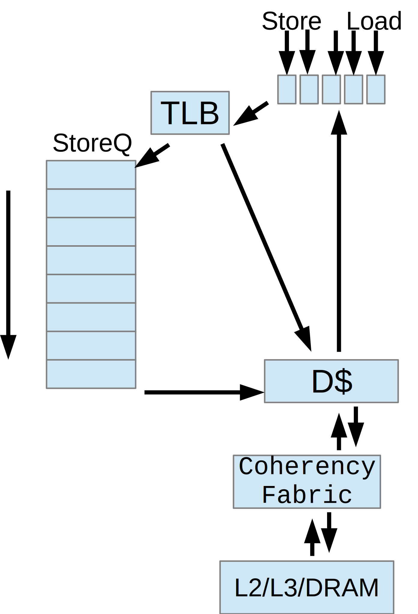
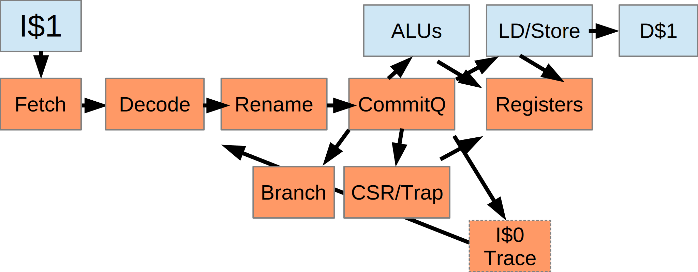
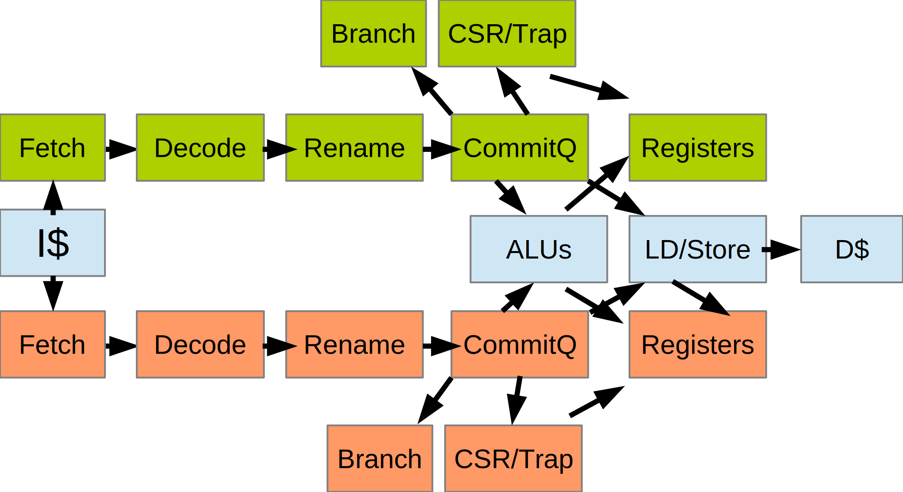
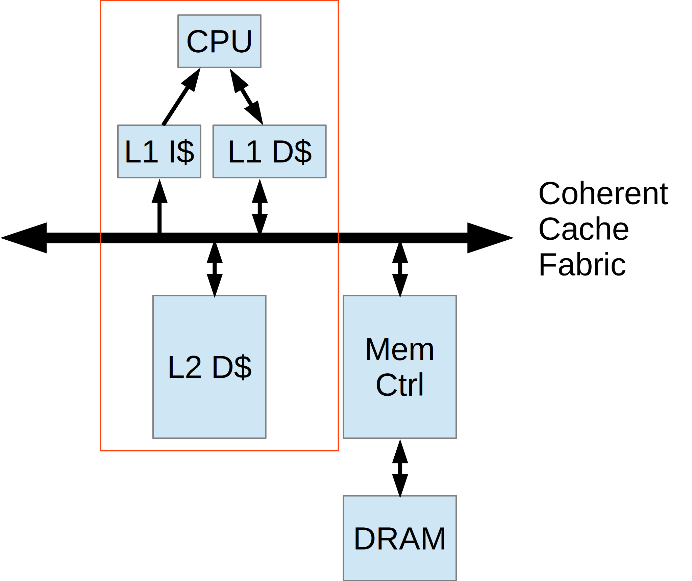
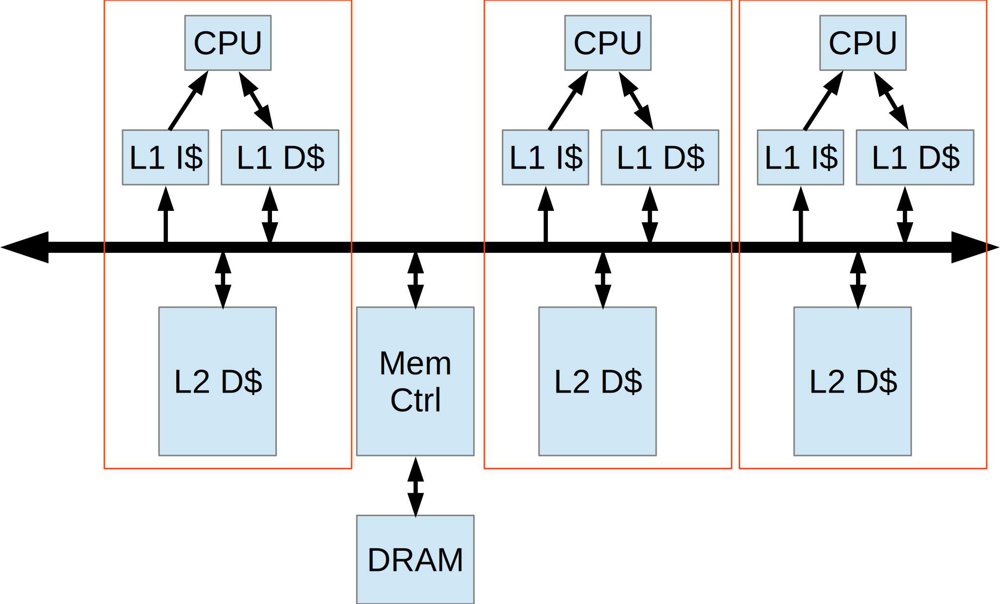
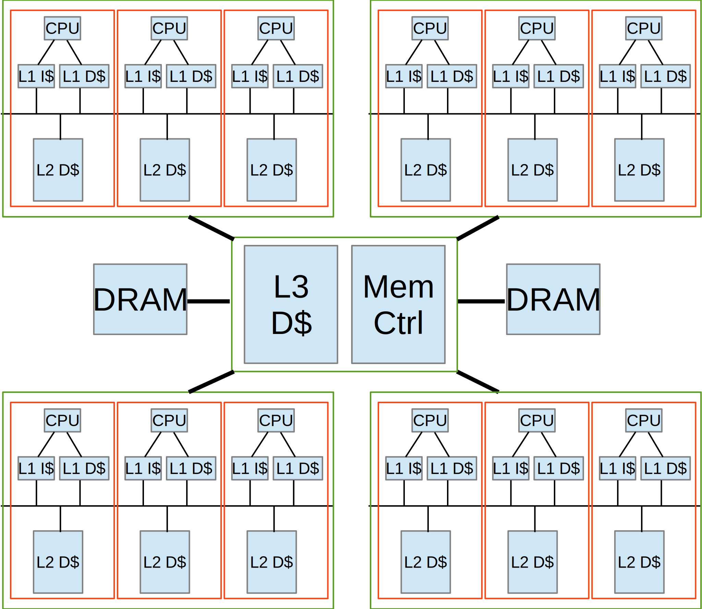

VROOM!
A new high-end RISC-V implementation
Paul Campbell - October 2021
paul@taniwha.com @moonbaseotago

(C) Copyright Moonbase Otago 2021)
Executive summary
- Very high end RISC-V implementation – cloud server class
- Out of order, super scalar, speculative
- RV64-IMAFDCHB
- Up to 8 IPC (instructions per clock) peak
- 2-way simultaneous multithreading capable
- Multi-core
- GPL3 – dual licensing possible
Making something big and fast ...
- Our goal is >4 IPC (average) with >97% branch prediction and lots of cache, deep out-of-order pipelines and speculative execution for managing cache and branch miss latency
- General long term goal is a high end server class CPU, 5GHz+, multithreaded, 100+ instructions in flight at any one time
1-3 Fetch and decoder
- 4 32-bit
instructions - Or 8 16-bit
instructions - Or a mix
- Some instructions
swallowed (no-ops,
jumps)
Instruction Bundles
Decoded instructions are passed between stages in bundles containing:
- Functional unit type
- Command information (add/sub load/store etc)
- Source and dest registers (and renamed source registers)
- Immediate constant
- PC
- Branch target
Eventually we'll do some instruction combining using this information (best place may be at entry to I$0 trace cache), or possibly at the rename stage
Registers
- We use a combined
register file - Commit registers are
for instruction’s results
and are either
eventually written to real
registers or abandoned, one
commit register for every
commitQ entry - Once a commitQ entry is commited it’s value is transfered to an architectural register
- Commit registers are shared between integer and FP regs
4 Renaming Stage
- Packs instruction
bundles - Renames source
registers to pick up
speculative results
from commit registers,
scoreboard keeps track of
where the latest version
of each architectural register will be stored - Keeps track of state when we do speculative misses
5+ Commit Queue
- Circular queue of pending
instructions - At some point
they are assigned
ALUs - When near the end
they are commited
(currently last 8 can be
commited per clock) - A resolved mispredicted branch or a trap can cause a partial or full commitQ flush
ALUs (functional units)
- 3 arithmetic (add/sub/and/or/xor/etc) [currently 2]
- 1 shift
- 1 multiply/divide
- >=1 FP [a work in progress]
- 1 branch [may be merged into arithmetic units]
- 1 CSR/TRAP/privileged
- 1 Load/Store (3 load/2 store per clock) [currently 2/1]
- Each commitQ entry is tagged for one of these
ALUs (functional units) 2
Inputs to a functional unit can be:
- Result of 1 or two register reads
- An immediate constant
- PC of the instruction
An instruction will not trigger execution until all its input registers are available.
Schedulers
- Each type of functional unit has a scheduler
- Looks for instructions ready to execute (ie who’s source registers will have been calculated in the next clock)
- Schedules the N instructions ready to run closest to the commit end of the commitQ
- Load/Store scheduler wont re-order stores past stores, or loads past stores (but will reorder loads) – once scheduled (and virt->phys translation) further reordering can happen
6-7-8 schedulers
- Basic ALU flow
looks like this - Heavily pipelined
(input to reg write
can be bypassed
to output of reg
Basic ALU flow
read)
Load/Store/Fence Unit
- Single Unit
- Can handle 3 concurrent loads and 2 concurrent stores
- Loads can run in 1 clock if in cache (or snooped from storeQ) and in TLBs
- Also 1 clock speculatively if in storeQ
- Stores/Fences go in the storeQ, are executed in order, but only once their commitQ instructions are committed
- Loads go in storeQ if they miss in cache, are fenced, or blocked by a pending access to the same cache line
Load/Store Unit
Virtual Memory
- Separate Instruction and Data 32 entry fully associative L1 TLBs
- Shared L2 TLB and table walker – 4 way associative 128+ entries
- Small cache of page data (to avoid upper page table refetches, takes part in cache coherency protocol)
- Table walker shares the instruction fetch port to the cache fabric (both are read only – I$1 cache coherency ports can have up to 8 concurrent transactions running at the same time)
Branch Unit
- Conditional branches - compares 2 register values, if their relationship is not as predicted, forces a partial commitQ (after the branch instruction) flush and a new PC
- Subroutine calls – writes PC+2/4 to register as output
- Indirect branches (if not as predicted forces a partial commitQ flush and a new PC)
- (may yet merge this into the integer ALU allowing us to resolve mutiple branches/clock)
CSR Unit
- Creates most system CSRs (some are in other units FP/Vect)
- IRET, syscall instructions
- Interrupts and traps – equivalent to a branch with system state change
- load/stores that fail get converted into traps in the commitQ
- Interrupts and fetch/decode traps get forced into the instruction stream, instruction fetch then stops
- Always handled at last spot in commitQ – traps can flush subsequent instructions
Performance
Still a work in progress. Observed in the current simulation:
- Peak 8 instructions decoded per clock
- Peak 8 commited per clock
- 5 clock branch misprediction penalty (often less or zero depending on what’s in the pipeline - mispredictions caught deep in the pipline can be resolved at 0 cost)
Theoretical:
- Max 88 instructions in flight (104 if you count pending stores)
- (currently) 8 concurrent 512bit cache line fetches per L1 cache
Putting it all together
Multithreading
A little further ...
This is what we have working today (without the L2)
Die Size
Building Systems
Current System
- Written in Verilog, some parts autogenerated in C
- Currently being tested on an AWS FPGA instance - boots linux
- Xilinx VU9P Ultrascale (which is really 3 dies)
- Cut down to fit: 2 load 1 store units, 2 ALUs, 1 MULT, 1 shifter, 32 entry commitQ, 8 entry storeQ 32k I$1, 32k D$1, no L2, small BTC max 56 instructions in flight
- Uses our cache coherency fabric, AWS’s DRAM controller
- Runs at 25MHz (for faster synthesis/routing times)
- Software support for serial and minimal hard drive, no networking yet

Eventual Goal
Much of the design is parameterized, we can change stuff easily, here’s a back of the envelope sketch of our goal:
- 1-5GHz (will likely involve adding ~2 pipe stages to the above description)
- 2 HARTS (multithreaded)
- CommitQ 64 entries
- StoreQ 32 entries
- I$0 64 entries of 8 instruction bundles
- I$1 64kbtytes
- D$1 64kbytes
- Combined L2 2-4Mb
- This means ~192 max instructions in flight
- 3 integer ALUs
- 1 shifter
- 3 load 2 store (per clock) load store unit
- 1 or 2 multipliers
- 1 or 2 FPUs
- 1 vector unit
- PLIC/CLIC/CLNT
- Bit manipulation/crypto extensions
Meltdown/Spectre etc
We’re not perfect (yet, still a work in progress), we do do the following mitigations:
- Separate BTCs between M/S/U operating modes
- BTC flushed on VM switch
- No speculative fetches to L1/2 caches until they pass VM access
- Fully associative TLB L1 with random replacement
- Wide D$1/I$1 way-ness (currently 32-way – also allows for large L1 caches with parallel TLB lookup) combined with random way replacement this muddys any signal an attacker is receiving
- Optional D$1 random replacement
Where are we up to?
- Most of the design is in place
- PLIC/CLIC/CLNT
- uart/faux disk/timers
- Coherent caching fabric
- Boots Linux on AWS FPGA instance
- Coded for multithreading (very not tested) and multiple CPUs, again not tested – like cache/btc/queue sizes these are simple build options
Next steps
Planned work:
- Finish FPU – about 50% done
- Work on BTC (currently deliberately broken to stress and debug pipeline commitQ shootdown)
- I$0 trace cache
- Expand LS unit to 3/2 from 2/1 load/store
- Rewrite cache coherency fabric with L2
- Spend some time on timing, we’ve purposely avoided spending too much time on low level timing – the current FPGA is big and slow, and nets that cross between dies kind of mess with any hope of representative timing – but it’s worth spending some time to hunt down particularly bad paths, we expect to repipe the final design by a couple of pipe stages to get to the Ghz range so some early warning would be useful
- B – bit manipulation – coded, not tested
- H - Virtualisation – about 50% done
- V - Vector Unit (waiting for FP)
- Debug
- Crypto
Research
One of the shorter term goals has been to get a system working well enough so that we can do benchmarks enabling us to optimise things like
- Cache sizes
- BTC size and architecture
- commitQ size
- storeQ size
- Test a multithreaded system
- Look at merging branch units and ALUs (this allows us to resolve multiple branches/clock)
- Investigate splitting out TLB lookup from the load/store unit into it’s own ALU – while it adds a clock it potentially allows us to do smart stuff with instruction reordering, it also may help reach Ghz speeds
We’re at a point now though where the size of the AWS FPGA instances may limit what we can test at large scale
Trace cache
This is probably the most interesting enhancement we can do to the current system to up the issue rate in inner loops to a fixed 8 bundles/clock no matter what size the original instruction was
- Virtually tagged
- Contains instruction bundles recorded from the commit stage of the commitQ
- This is a great place to do instruction combining (timing wise)
- Bundles issue directly to the renamer saving a few clocks in the pipeline
Licensing
Once it’s usable by others:
- GPL 3
- Dual licensing available – looking for partners to actually build one